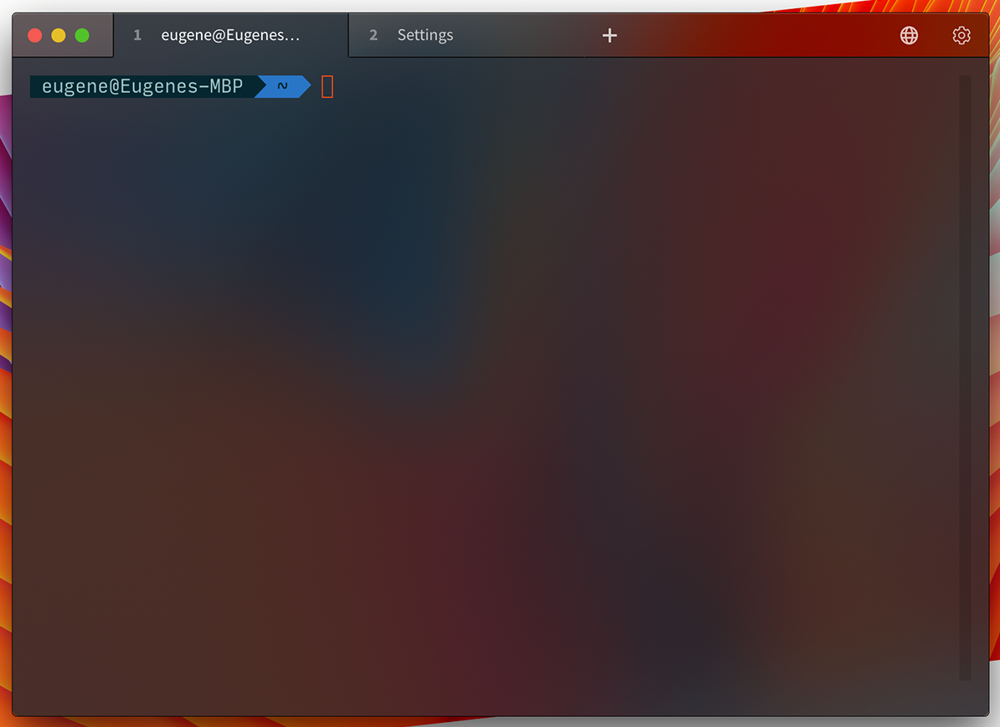
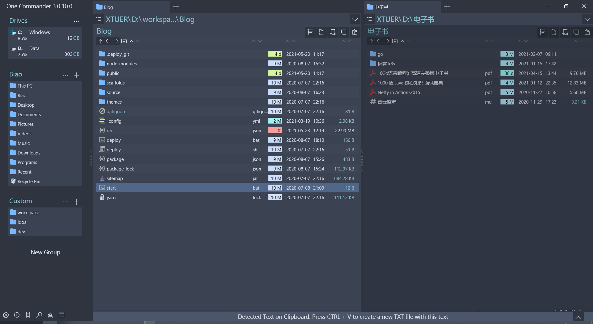
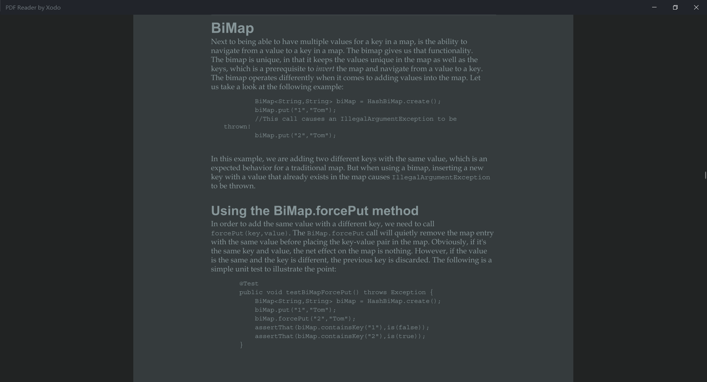

包管理器 Chocolatey
Chocolatey 是一款专为 Windows 系统开发的、基于 NuGet 的包管理器工具，类似于
- Node 的 npm
- MacOS 的 brew
- Ubuntu 的 apt-get
- CentOS 的 yml
Chocolatey 的设计目标是成为一个去中心化的框架，便于开发者按需快速安装应用程序和工具，官网为 https://chocolatey.org，安装很简单，根据说明安装即可。
常用命令
搜索:
choco search something列出:
choco list -lo安装:
choco install cmake可访问 https://chocolatey.org/packages 查看已有的包和说明
卸载:
choco uninstall cmake升级:
choco upgrade cmake固定包的版本，防止包被升级:
choco pin windirstat
微软官方神器第三方库管理工具 Vcpkg
Vcpkg 用来帮助我们在 Windows 方便地上获取第三方的 C/C++ 库，例如 curl, opencv 等，官网为 https://github.com/Microsoft/vcpkg，安装也是很简单，根据说明安装即可。
Vcpkg 依赖 git 和 cmake，可以使用上面的 Chocolatey 安装 git 和 cmake:
choco install git
choco install cmake，然后把 cmake 的 bin 目录添加到 PATH 环境变量里
常用命令
- 安装:
vcpkg install lib-name- 安装 curl:
vcpkg install curl - 安装 boost:
vcpkg install boost - 安装 opencv:
vcpkg install opencv
- 安装 curl:
- 列出:
vcpkg list - 搜索:
vckpg search列出所有可用的库，也可以在 ports 目录中看到vcpkg search curl列出搜索到的库
- 删除:
vcpkg remove curl
补充说明
指定库的平台:
默认安装的是 Windows x86 也就是 32 位的库，如果要安装 x64 的库，在库的名字后面加上
:platform，例如安装 x64 的 curl 的命令为vcpkg install curl:x64-windows，具体还支持哪些平台，请访问官网的triplets库安装的位置:
${vcpkg}/installed/x86-windows${vcpkg}/installed/x64-windows
指定库的版本: 修改
${vcpkg}/ports/package-name/profile.cmake中对应的信息，然后安装可看看视频微软工程师对 Vcpkg 的介绍视频 http://www.365yg.com/item/6499765776189227534
命令行工具 ConEmu
CMD 的替代工具，显示 UTF-8 字符时不会像 CMD 那样屏幕刷新不干净，官网为 https://github.com/Maximus5/ConEmu。
ConEmu starts a console program in hidden console window and provides an alternative customizable GUI window with various features:
- smooth window resizing;
- tabs and splits (panes);
- easy run old DOS applications (games) in Windows 7 or 64bit OS (DosBox required);
- quake-style, normal, maximized and full screen window graphic modes;
- window font anti-aliasing: standard, clear type, disabled;
- window fonts: family, height, width, bold, italic, etc.;
- using normal/bold/italic fonts for different parts of console simultaneously;
- cursor: standard console (horizontal) or GUI (vertical);
- and more, and more…
- 可以默认设置使用 UTF-8 编码:
Settings -> Startup -> Environment: chcp utf-8
SSH 工具 Tabby
Tabby (formerly Terminus) is a highly configurable terminal emulator, SSH and serial client for Windows, macOS and Linux
- Integrated SSH and Telnet client and connection manager
- Integrated serial terminal
- Theming and color schemes
- Fully configurable shortcuts and multi-chord shortcuts
- Split panes
- Remembers your tabs
- …

SSH 工具 FinalShell
FinalShell 是一体化的的服务器，网络管理软件，不仅是 ssh 客户端，还是功能强大的开发，运维工具，充分满足开发，运维需求。特色功能: 免费海外服务器远程桌面加速，ssh 加速，双边 tcp 加速，内网穿透，官网为 http://www.hostbuf.com。
使用它是因为免费，并且 SSH 能够自动记住用户名密码，默认支持 UTF-8。
SSH 工具 Termius
Termius 的免费版也挺好用的，目前在用，可以保存 ssh 的连接配置，双击进行连接，界面漂亮。

SwitchHosts
可以使用 SwitchHosts 方便的切换 Hosts。或者使用 Utools 的 hosts 插件。
键盘映射工具
RemapKey等: 小巧实用的键盘映射工具介绍了不几款同类工具，我比较习惯 RemapKey (点击下载)，需要以管理员身份运行，否则修改不了注册表。
AutoHotkey
AutoHotkey is a free, open-source scripting language for Windows that allows users to easily create small to complex scripts for all kinds of tasks such as: form fillers, auto-clicking, macros, etc.
简单的说就是可以定义快捷键执行 Windows 的脚本、函数等，使用方法:
- 下载、安装、运行
- 创建一个文本文件，命名为 AutoHotkey.ahk，使用文本编辑器打开，在里面使用 AutoHotkey 语法进行编程
- 每次编写后，在 AutoHotkey.ahk 上点击右键，点击菜单项 Run Script 运行
AutoHotkey 的文档请阅读 https://www.autohotkey.com/docs/AutoHotkey.htm，下面列出我常用的脚本:
其中:
!: 表示 Alt 键^: 表示 Ctrl 键#: 表示 Win 键>^e: 表示右 Ctrl + e
使用快捷键打开或者激活打开的程序为当前窗口 (! 表示 Alt 键):
1 | RunOrActivateProgram(Program, WorkingDir="", WindowSize=""){ |
在屏幕之间移动鼠标: 使用多个屏幕的时候移动鼠标到另一个屏幕有时候比较麻烦，下面的脚本定义按下 Alt + ` 移动鼠标到另一个屏幕的中间:
1 | !`:: |
提示: 请根据自己屏幕的分辨率修改 MouseMove 后的鼠标坐标。
Page Down | Page Up: 有些笔记本没有翻页按键，可以设置 Ctrl + ↑ 和 Ctrl + ↓ 进行翻页:
1 | ^Up::Send {PgUp} |
我在使用的配置:
1 | RunOrActivateProgram(Program, WorkingDir="", WindowSize=""){ |
不用 Alt 键作为快捷键的部分是因为在某些程序下，按下 Alt 组合的快捷键，总是先激活菜单，导致快捷键失效。由于平时 Win 键用的不多，而且没有 Alt 键的弊端，所以我个人更喜欢使用 Win 键来创建快捷键。
设置 Powershell 的默认编码为 UTF-8
Powershell (PS) 的默认编码为 GBK，输入 chcp 65001 修改当前 Tab 页的编码为 UTF-8，但是其他 Tab 页和新创建的 Tab 的编码不受影响，每次都手动输入比较麻烦，可以在 PS 的配置文件中设置其默认编码为 UTF-8:
打开配置文件，在 PS 中输入 $profile，然后回车，输出的值即为 PS 配置文件的位置，如果这个文件不存在，手动创建即可
在配置文件中增加:
1
$OutputEncoding = [console]::InputEncoding = [console]::OutputEncoding = New-Object System.Text.UTF8Encoding
重启 PS
查看命令
chcp的输出，如果为 Active code page: 65001 说明 PS 的默认编码为 UTF-8
至于 CMD 则不能用上面修改配置文件的方式修改默认编码，不过可以手动输出 chcp 65001 修改当前窗口的编码，新打开的 CMD 窗口编码仍然为 GBK。
MySQL 客户端
- MySQL-Front: 一款小巧的管理Mysql的应用程序，主要特性包括多文档界面，语法突出，拖拽方式的数据库和表格，可编辑/可增加/删除的域，可编辑/可插入/删除的记录，可显示的成员，可执行的 SQL 脚本，提供与外程序接口，保存数据到 CSV 文件等。
- Heidi SQL: HeidiSQL is free software, and has the aim to be easy to learn. “Heidi” lets you see and edit data and structures from computers running one of the database systems MariaDB, MySQL, Microsoft SQL, PostgreSQL and SQLite. Invented in 2002 by Ansgar, HeidiSQL belongs to the most popular tools for MariaDB and MySQL worldwide.
文件管理器 One Commander
下载地址: https://onecommander.com/OneCommanderLatest.zip
参考资料: 超好用的文件资源管理器one commander v3

PDF Reader by Xodo
Windows 有很多 PDF 阅读器，如果只是轻量使用，不进行 PDF 编辑，推荐使用 PDF Reader by Xodo，从 Microsoft Store 中搜索 Xodo 进行安装。比较喜欢它的特点:
- 简单、漂亮，Ui 可配置极尽简化
- 可做标记
- 支持多标签页
界面就像下面这么简单 (当然还有工具栏，被自动隐藏了，点击鼠标右键出现)，我很喜欢:
